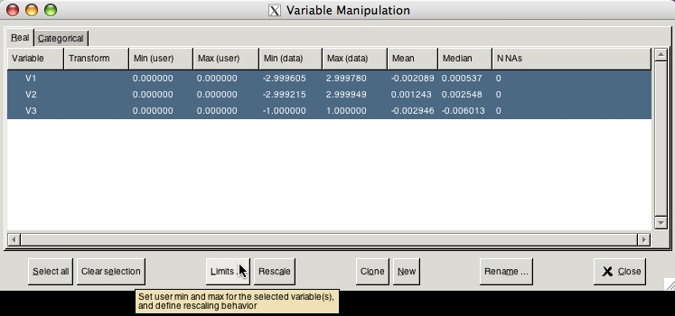
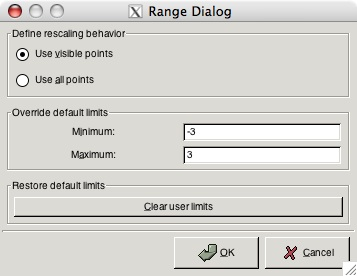

Variable Manipulation
In GGobi, by default each variable is scaled to 0,1. However, some objects need to be scaled to a global maximum and minimum, eg an ellipsoid, to be viewed properly. To do this in GGobi go to the Variable Manipulation Tool, and set the User Limits to be equal to the global minimum and maximum.
 Tools > Variable Manipulation |
|
 Highlight all levels and click 'Limits' |
|
 Input limits desired |